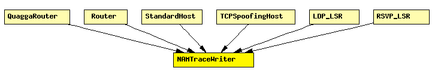

File: Util/NAMTraceWriter.ned
C++ definition: click here
When placed inside a host or router, it writes a NAM trace, based on notifications it receives via the NotificationBoard. Expects to find a NAMTrace module named "nam" at network level.
This module has no gates and does not process messages.
See also: NAMTrace, NotificationBoard
The following diagram shows usage relationships between modules, networks and channels. Unresolved module (and channel) types are missing from the diagram. Click here to see the full picture.
If a module type shows up more than once, that means it has been defined in more than one NED file.
| QuaggaRouter | Quagga-based IP router. |
| Router | IP router. |
| StandardHost | |
| TCPSpoofingHost | IP host with TCPSpoof in the application layer. |
| LDP_LSR | An LDP-capable router. |
| RSVP_LSR | An RSVP-TE capable router. |
| Name | Type | Description |
|---|---|---|
| namid | numeric |
simple NAMTraceWriter parameters: namid : numeric; endsimple